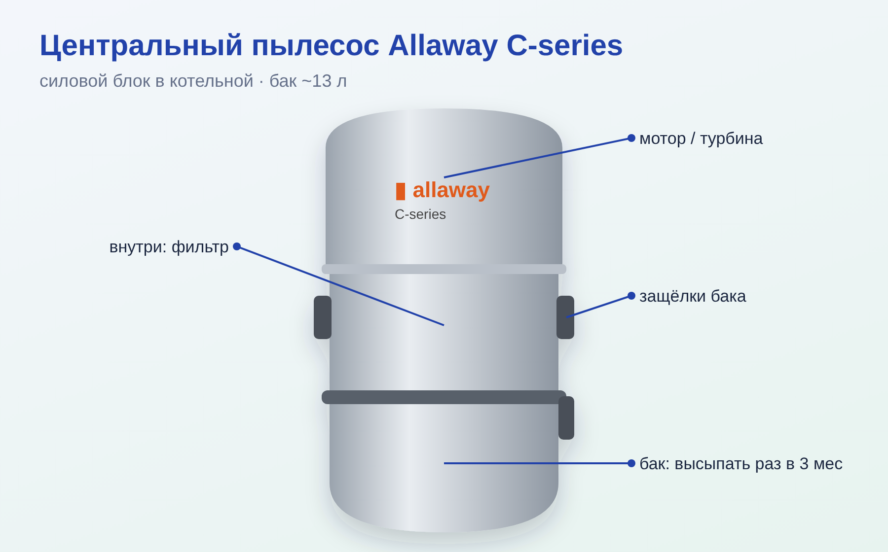
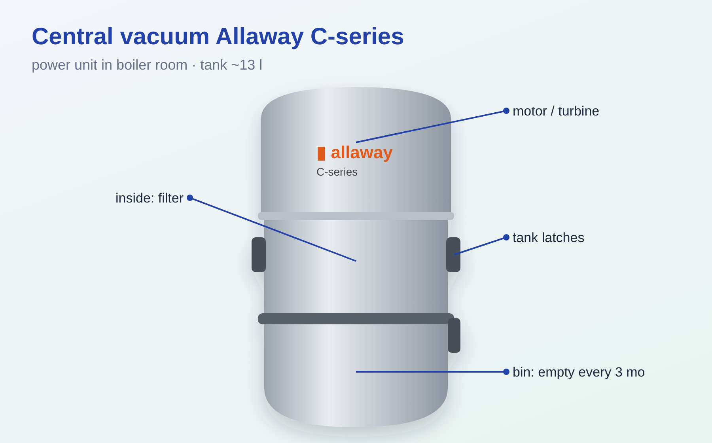
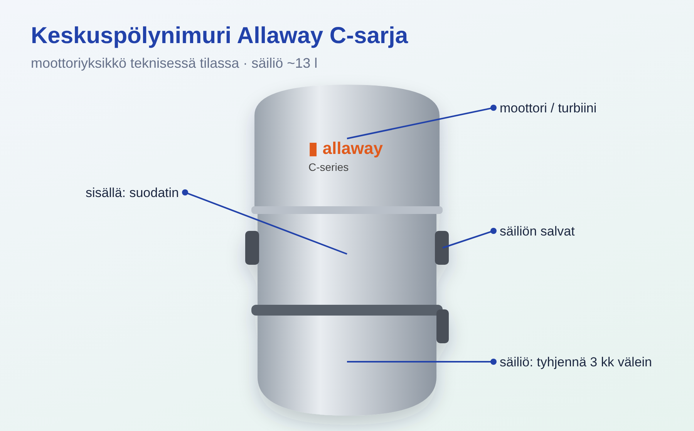

• Силовой блок висит в котельной; в комнатах — настенные пылесосные розетки. • Вставили шланг в розетку и нажали выключатель на ручке (или просто вставили) — блок запускается сам. • Автомат в щите — «Keskusimuri», нижний ряд.
1. Открыть боковые защёлки, вынуть нижний бак. 2. Высыпать мусор, протереть уплотнитель бака. 3. Поставить обратно, закрыть защёлки. • Высыпать примерно раз в 3 месяца, до того как мусор дойдёт до низа защёлок. • Раз в год помыть бак мягким моющим средством.
• Тонкий фильтр защищает турбину. Доступ: выдернуть вилку из розетки, высыпать бак, открутить крепёжную гайку фильтра. • Чистить ТОЛЬКО лёгкой щёткой. ⚠ Не мыть водой, не продувать сжатым воздухом, не выбивать. • Менять раз в 3 года или после каждых 3 баков (что раньше). Сменный фильтр A/C-серии продаётся в Motonet, K-Rauta, Taloon (тонкий фильтр № 10813, защитный чехол-фильтр № 80692).
• Если блок остановился сам — сработала тепловая защита турбины. Дать остыть 10–15 минут; сначала устранить причину: полный бак, забитый фильтр, засор в трубе.
1. Высыпать бак, проверить фильтр. 2. Найти участок: втягивать полоски бумажного полотенца в разные розетки — где бумага не доходит до бака, там засор. 3. Подключить шланг к этой розетке и резко закрывать/открывать ладонью отверстие — рывки давления. Не дольше 10–15 секунд, потом дать турбине минуту остыть. • ⚠ Продувать трубы сжатым воздухом НЕЛЬЗЯ — разойдутся соединения.
• Закрыты ли остальные розетки, нет ли предмета в шланге/розетке, цел ли уплотнитель бака, не полный ли бак, чистый ли фильтр.
• Есть ли 230 В (автомат «Keskusimuri»), попробовать другую розетку, проверить выключатель на ручке шланга, не сработала ли тепловая защита. Если реле щёлкает, а мотор молчит — сервис.
• Хранить на держателе, не на солнце (пластик становится хрупким). Резьба на концах — левая.

• The power unit hangs in the boiler room; the rooms have wall-mounted vacuum inlets. • Plug the hose into an inlet and press the switch on the handle (or just plug it in) — the unit starts by itself. • The breaker in the panel is "Keskusimuri", bottom row.
1. Open the side latches and take out the lower bin. 2. Empty the dirt and wipe the bin seal. 3. Put it back and close the latches. • Empty roughly every 3 months, before the dirt reaches the bottom of the latches. • Once a year wash the bin with a mild detergent.
• The fine filter protects the turbine. Access: pull the plug out of the socket, empty the bin, unscrew the filter's fixing nut. • Clean ONLY with a soft brush. ⚠ Do not wash with water, do not blow with compressed air, do not knock it out. • Replace every 3 years or after every 3 bins (whichever comes first). A/C-series replacement filters are sold at Motonet, K-Rauta, Taloon (fine filter No. 10813, protective sleeve filter No. 80692).
• If the unit stops by itself, the turbine's thermal protection has tripped. Let it cool for 10–15 minutes; first remove the cause: full bin, clogged filter, blockage in a pipe.
1. Empty the bin, check the filter. 2. Locate the section: suck strips of paper towel into different inlets — where the paper does not reach the bin, that is where the blockage is. 3. Connect the hose to that inlet and sharply close/open the opening with your palm — pressure jolts. No longer than 10–15 seconds, then let the turbine cool for a minute. • ⚠ NEVER blow the pipes with compressed air — the joints will come apart.
• Are the other inlets closed, is there an object in the hose/inlet, is the bin seal intact, is the bin full, is the filter clean?
• Is there 230 V (breaker "Keskusimuri"), try another inlet, check the switch on the hose handle, has the thermal protection tripped. If the relay clicks but the motor is silent — service.
• Store on its holder, out of the sun (the plastic becomes brittle). The threads on the ends are left-handed.

• Imuyksikkö on seinällä teknisessä tilassa; huoneissa on seinään asennetut imurasiat. • Kun letku työnnetään imurasiaan ja kahvan kytkintä painetaan (tai letku vain työnnetään rasiaan), yksikkö käynnistyy itsestään. • Sulake sähkökeskuksessa: "Keskusimuri", alin rivi.
1. Avaa sivulukitukset ja irrota alempi säiliö. 2. Tyhjennä roskat ja pyyhi säiliön tiiviste. 3. Aseta säiliö takaisin ja sulje lukitukset. • Tyhjennä noin 3 kuukauden välein, ennen kuin roskat ulottuvat lukitusten alareunaan asti. • Pese säiliö kerran vuodessa miedolla pesuaineella.
• Hienosuodatin suojaa turbiinia. Pääsy suodattimeen: irrota pistotulppa pistorasiasta, tyhjennä säiliö ja kierrä suodattimen kiinnitysmutteri auki. • Puhdista VAIN kevyesti harjalla. ⚠ Älä pese vedellä, älä puhalla paineilmalla äläkä kopista. • Vaihda 3 vuoden välein tai joka 3. säiliöllisen jälkeen (kumpi tulee ensin). A/C-sarjan vaihtosuodattimia myyvät Motonet, K-Rauta ja Taloon (hienosuodatin nro 10813, suojasukkasuodatin nro 80692).
• Jos yksikkö pysähtyy itsestään, turbiinin lämpösuoja on lauennut. Anna jäähtyä 10–15 minuuttia; poista ensin syy: täysi säiliö, tukkeutunut suodatin tai tukos putkessa.
1. Tyhjennä säiliö ja tarkista suodatin. 2. Paikanna kohta: imaise talouspaperisuikaleita eri imurasioista — tukos on siinä kohdassa, josta paperi ei päädy säiliöön asti. 3. Liitä letku tähän imurasiaan ja sulje/avaa letkun aukko nopeasti kämmenellä — syntyy paineiskuja. Enintään 10–15 sekuntia, anna sitten turbiinin jäähtyä minuutin ajan. • ⚠ Putkia EI SAA puhaltaa paineilmalla — liitokset irtoavat.
• Ovatko muut imurasiat kiinni, onko letkussa/rasiassa jokin esine, onko säiliön tiiviste ehjä, onko säiliö täynnä, onko suodatin puhdas?
• Onko 230 V jännite päällä (sulake "Keskusimuri"), kokeile toista imurasiaa, tarkista letkun kahvan kytkin ja onko lämpösuoja lauennut. Jos rele naksahtaa mutta moottori ei käynnisty — huoltoon.
• Säilytä letkua telineessä, ei auringossa (muovi haurastuu). Päiden kierteet ovat vasenkätiset.